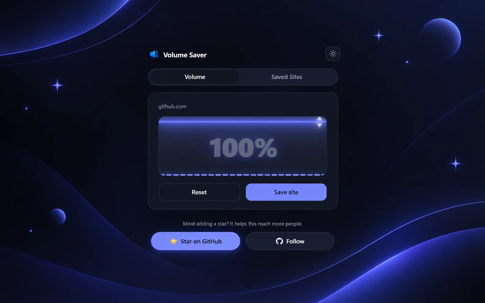

a chrome extension for one annoying problem
every site handles volume differently, and half of them fight you if you try to fix it from the OS mixer. some clamp it, some remember nothing between visits, some route audio through a custom player that ignores the system slider entirely.
simple-volume-saver sits on top of that: pick a level per site, it remembers, and you can reset it without digging through five different players' settings. the core is a background service worker that injects a small function into the page, and a bit of chrome.storage, nothing that needed a framework. saved levels are kept per site in chrome.storage.sync, so they follow you across signed-in devices, and a live audio-reactive visualizer, fed by chrome.tabCapture, shows the tab's real audio output rather than a decorative animation.

the popup is intentionally small: a slider, a site name, a reset button. most of the actual work happens in the service worker: when a tab finishes loading or starts playing audio, it looks up the saved level for that site's origin and injects a function that applies it to every media element on the page.
// background.js (protocol checks and error handling left out)
function handleTabAudio(tabId, tab) {
const url = new URL(tab.url);
chrome.storage.sync.get(['siteList'], (data) => {
const volume = (data.siteList || {})[url.origin];
if (volume === undefined) return;
chrome.scripting.executeScript({
target: { tabId },
func: applyVolumeToPage,
args: [volume]
});
});
}
// injected into the page
function applyVolumeToPage(volumePercent) {
window.__svsVolume = volumePercent / 100;
const applyToAll = () => {
document.querySelectorAll('video, audio').forEach((media) => {
media.volume = window.__svsVolume;
});
};
applyToAll();
// ...then a MutationObserver re-applies it to media added later
}nothing fancy under the hood, but it's the kind of tool I actually reach for every day, which is more than I can say for most of what I've shipped.